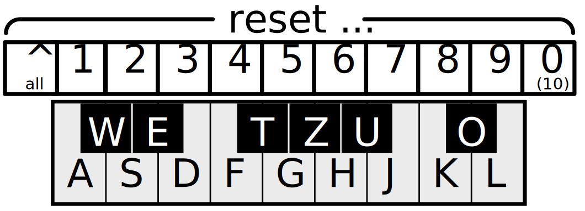

You are a single voice in the vastness of 88 different notes. While you can change your sound, and also use the computer keyboard , you would be pretty lost alone.
But lucky for you, there could be friends with you! They are fairly lazy and have a quite crooked, statistical notion of harmony, but hey - they loyally follow you around wherever you go!